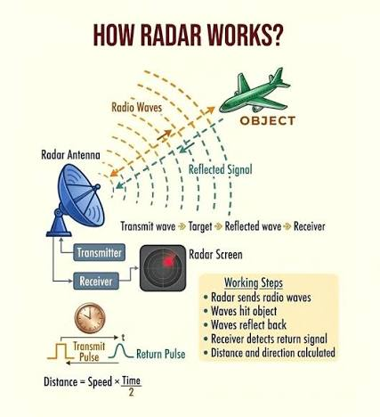
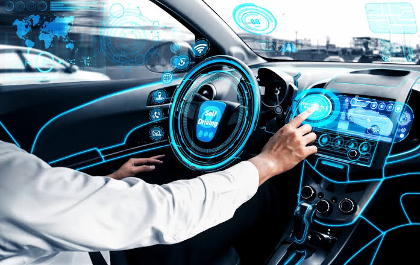
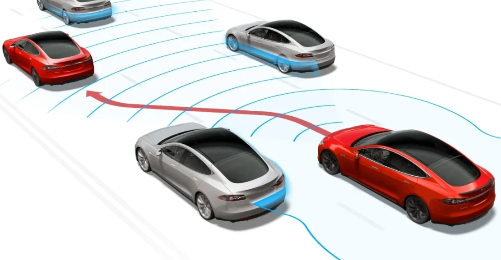
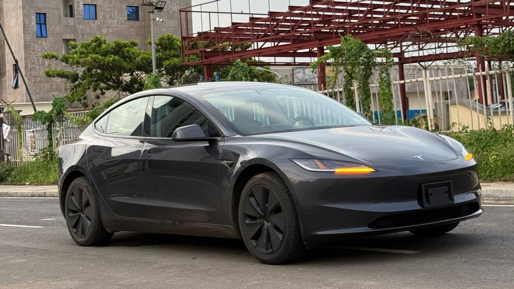

Robot field guide / 2026
Twenty ways
robots help.
A visual reference for practical robot systems, grouped by the work they do. Open any example for a concise concept note and indicative starting price.
Learn & growCare & protectMove & make
Autonomous systems / visual notes
The parts behind
the movement.
Four visual references show how autonomous cars sense their surroundings, plan routes and turn information into action.



Learn
Education robots
Teach coding, science and problem-solving through hands-on experiments.
Care
Healthcare robots
Carry supplies, support rehabilitation and give staff more time with patients.
Move
Warehouse robots
Find shelves, move boxes and make stock rooms faster and safer.
Connect
Telepresence robots
Let a remote person visit a classroom, office or event through a mobile screen.
Grow
Agricultural robots
Inspect crops, remove weeds and harvest with less waste.
Protect
Search and rescue
Explore unstable buildings, tunnels or disaster zones before people enter.
Deliver
Delivery drones
Carry small packages across campuses and hard-to-reach routes.
Care
Cleaning robots
Vacuum, mop or disinfect large spaces consistently.
Protect
Security robots
Patrol sites, spot unusual activity and send live alerts.
Connect
Social robots
Offer conversation, reminders and playful interaction.
Renew
Recycling robots
Sort materials quickly and consistently on a conveyor.
Explore
Underwater robots
Inspect reefs, pipes and shipwrecks in difficult conditions.
Home
Home assistants
Handle reminders, fetch tasks and routines around the house.
Care
Surgical robots
Give trained surgeons finer control for delicate procedures.
Make
Factory robots
Assemble, weld, paint and inspect products accurately.
Protect
Firefighting robots
Enter dangerous heat and smoke before a crew does.
Build
Construction robots
Measure sites, lay materials and reduce repetitive work.
Serve
Hospitality robots
Deliver meals, towels or information through busy venues.
Explore
Space robots
Repair equipment and explore places humans cannot yet reach.
Include
Assistive robots
Support mobility, communication and independence.